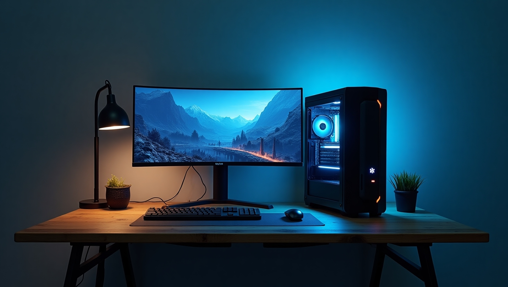

.
.
.
Computing Tips and Tricks
In the world of computing, there are numerous tips and tricks that can enhance your productivity and overall experience. Here are some essential ones to get you started:
Boosting Computer Performance
Keeping your computer running smoothly requires maintaining its hardware and software. Regular updates, disk cleanups, and upgrading components such as RAM or storage can drastically improve performance.
Maximizing Efficiency with Shortcuts
Learn keyboard shortcuts for the applications you use most often. These small tricks can save time and effort, allowing you to accomplish tasks faster. For example, using Ctrl + C to copy, Ctrl + V to paste, and Alt + Tab to switch between apps.
Essential Software Tools
Using the right software is critical for increasing productivity. Software like CCleaner for system cleanup, 7-Zip for file compression, and Mozilla Firefox for browsing can enhance your computing experience.
Regular Backups
Don't wait until it's too late. Regular backups of your important files can save you from unexpected crashes. Use cloud services like Google Drive or OneDrive, or external hard drives for offline backups.